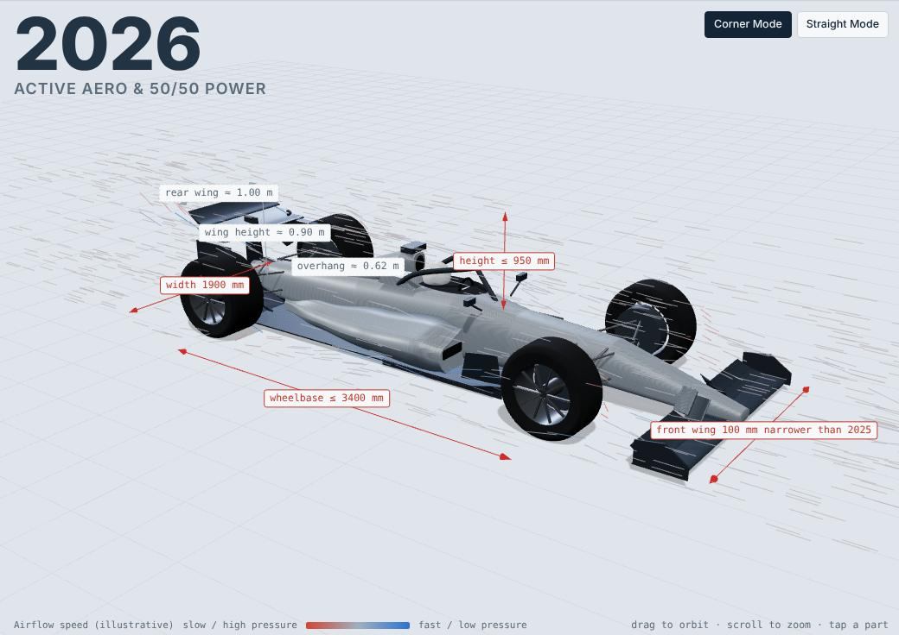
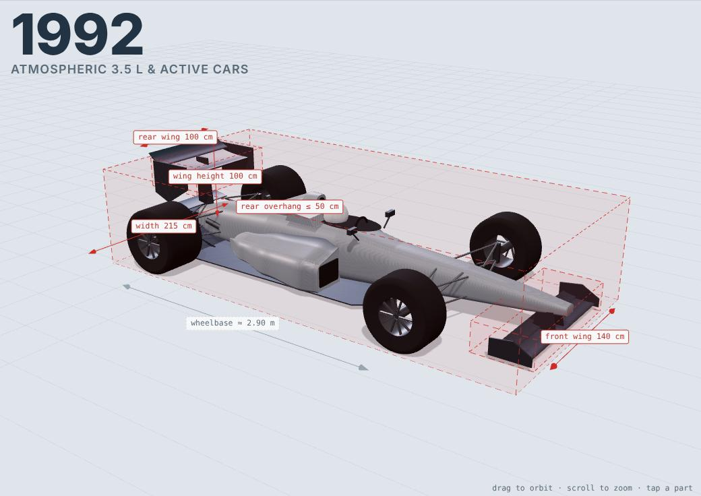

01 · Interactive 3D site
Aero Atlas
How Formula 1's rules shaped the cars, from the 1961 1.5-litre formula to the 2026 active-aero cars, in one interactive 3D model.
- three.js
- JavaScript
- Procedural 3D geometry
- Data research
66seasons modelled
919team-seasons in the grid data
25radical designs explained
- Builds a regulation car for every season from that year's FIA figures (width, wing spans and heights, overhangs, wheelbase, tyres, weight), with a cited source on every number and both values shown where sources disagree.
- All geometry is generated in code: lofted chassis and sidepod sections, NACA-style aerofoils, lathed tyres, and era-specific details such as skirts, grooved tyres, the halo and 2026 movable wings.
- "Legal box" view of the space the rules allow, an illustrative airflow view, era comparison as a ghost overlay, and every season's grid from the open F1DB dataset.

